Index / O mundo / Ores and minerals
Ores and minerals
Os minérios e minerais em Terrafirmacraft são raros - ao contrário da baunilha, os minérios são encontrados em veias maciças, escassas e raras que requerem algumas prospecção localizar. Minérios diferentes também aparecerão em diferentes tipos de rochas e em diferentes elevações, o que significa encontrar o tipo de rocha certo na altitude certa é a chave para localizar o minério que você está procurando.
Além disso, alguns minérios são Classificado. Os blocos de minério podem ser pobres, normais ou ricos e veias diferentes terão diferentes concentrações de cada tipo de bloco. Veias que são Mais rico são mais lucrativos.
As próximas páginas mostram os diferentes tipos de minérios e onde encontrá -las.
Cobre nativo
Cobre nativo é um minério de metal. Pode ser encontrado em qualquer elevação, mas as veias mais profundas são muitas vezes mais ricas. Pode ser encontrado em Ígneo extrusivo pedras.
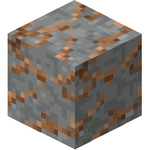Minérios de cobre nativos em dacita.
Ouro nativo
O ouro nativo é um minério de Ouro metal. Pode ser encontrado em elevações abaixo de y = 60, mas as veias mais profundas são muitas vezes mais ricas. Pode ser encontrado em Ígneo extrusivo e Intrusivo ígneo pedras.
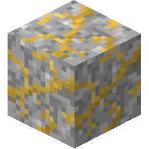Minérios de ouro nativos em diorito.
Prata nativa
Prata nativa é um minério de Prata metal. Pode ser encontrado em elevações entre y=-32 e y=100. Pode ser encontrado em Granito, e Gneiss principalmente, por mais veias pobres menores que possam ser encontradas em qualquer Metamórfica pedras.
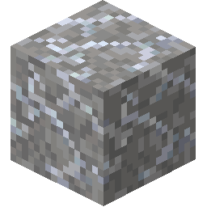Minérios de prata nativos em granito.
Hematita
Hematita é um minério de metal. Pode ser encontrado em elevações abaixo de y=75. Pode ser encontrado em Ígneo extrusivo pedras.
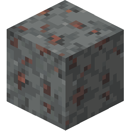Minérios de hematita em andesita.
Cassiterito
Cassiterito é um minério de Estranho metal. Pode ser encontrado em qualquer elevação, mas as veias mais profundas são muitas vezes mais ricas. Pode ser encontrado em Intrusivo ígneo pedras.
Quando encontrado em Granito, As veias cassiteritas também podem conter traços de Topázio.
Minérios de cassiterita em diorito.
Bismutinita
Bismutinita é um minério de Bismuto metal. Pode ser encontrado em qualquer elevação, mas as veias mais profundas são muitas vezes mais ricas. Pode ser encontrado em Intrusivo ígneo e Sedimentar pedras.
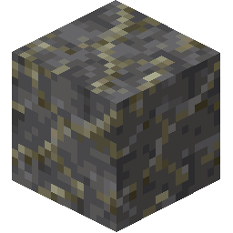Minérios bismutinitos no xisto.
Garnings
Garnierite é um minério de Níquel metal. Pode ser encontrado em elevações entre y=-32 e y=100. Pode ser encontrado principalmente em Gabro, por mais pobres que possam ser encontrados em qualquer Intrusivo ígneo pedras.
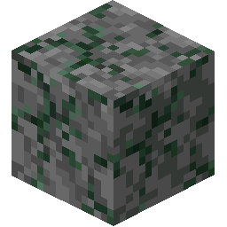Minérios Garnierite em Gabro.
Malaquita
Malaquita é um minério de Cobre metal. Pode ser encontrado em elevações entre y=-32 e y=100. Pode ser encontrado principalmente em Marble ou Limestone, por mais pobres menores também podem ser encontrados em Phyllite(Filito), Chalk, e Dolomite.
Quando encontrado em Limestone, veias malaquitas também podem conter vestígios de Gesso.
Minérios malaquita em mármore.
Magnetita
Magnetita é um minério de metal. Pode ser encontrado em elevações abaixo de y=60, mas as veias mais profundas são muitas vezes mais ricas. Pode ser encontrado em Sedimentar pedras.
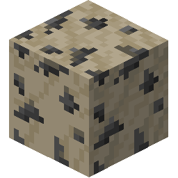Minérios de magnetita em calcário.
Limonite
Limonite is an ore of Iron metal. It can be found at elevations below y=60, but deeper veins are often richer. It can be found in Sedimentary rocks.
When found in Limestone or Shale, Limonite veins can also contain traces of Rubies.
Minérios de limonita em giz.
Esfalerita
Esfalerita é um minério de Zinco metal. Pode ser encontrado em qualquer elevação, mas as veias mais profundas são muitas vezes mais ricas. Pode ser encontrado em Metamórfica pedras.
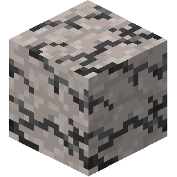Minérios de esfalerita em quartzito.
Tetraedrito
Tetraedrito é um minério de Cobre metal. Pode ser encontrado em qualquer elevação, mas as veias mais profundas são muitas vezes mais ricas. Pode ser encontrado em Metamórfica pedras.
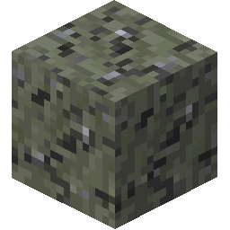Minérios de tetraedrito no xisto.
Carvão betuminoso
O carvão betuminoso é um tipo de Carvão minério. Pode ser encontrado em elevações acima de y = 0. Pode ser encontrado em Sedimentar pedras.
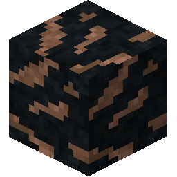Carvão betuminoso em chert.
Lignite
Lignite é um tipo de Carvão minério. Pode ser encontrado em elevações abaixo de y = 100. Pode ser encontrado em Sedimentar pedras.
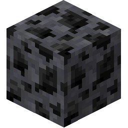Lignita em dolomita.
Caulinita
Caulinita é um Mineral que é usado na construção de Argila de fogo. Pode ser encontrado em elevações acima de y = 0. Pode ser encontrado em Sedimentar pedras.
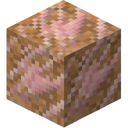Caulinita em argila.
Grafite
Grafite é a Mineral que é usado na construção de Argila de fogo. Pode ser encontrado em elevações abaixo de y = 100. Pode ser encontrado em Gneisse, Mármore, Quartzito, e Xisto.
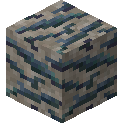Grafite em Gnaisse.
Cinnabar
Cinnabar é a Mineral que pode ser moído no Quern obter Redstone Dust. Pode ser encontrado em elevações abaixo de y=100. Pode ser encontrado em Ígneo extrusivo pedras, Quartzite, e Shale.
Quando encontrado em Quartzite, As veias de Cinnabar também podem conter traços de Opal.
Cinnabar em quartzito.
Criolito
Cryolite é a Mineral que pode ser moído no Quern obter Redstone Dust. Pode ser encontrado em elevações abaixo de y=100. Pode ser encontrado apenas em Granito.
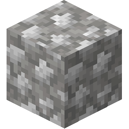Criolito em granito.
Salitre
SaltPeter é a Mineral que pode ser moído no Quern, e depois usado na criação de Pólvora. Pode ser encontrado em elevações abaixo de y=100. Pode ser encontrado em Sedimentar pedras.
Quando encontrado em Limestone, As veias de sal de salgadinhos também podem conter vestígios de Gesso.
Saltpeter em xisto.

Enxofre
Enxofre é a Mineral que pode ser moído no Quern, e depois usado na criação de Pólvora. Pode ser encontrado em elevações acima de y = 0. Pode ser encontrado em Ígneo extrusivo pedras. Também pode ser encontrado mais comumente em Vulcânica áreas, em ambos Ígneo extrusivo e Intrusivo ígneo Rochas, em elevações mais altas.
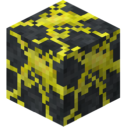Enxofre no basalto.
Sylvite
Sylvite é a Mineral que pode ser moído no Quern, e então usado como um Fertilizer. Pode ser encontrado em elevações acima de y=0. Pode ser encontrado em Shale, Claystone e Chert.
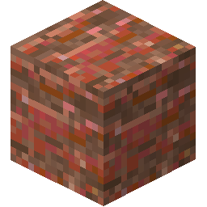Sylvite em Chert.
Borax
Borax é um Mineral que pode ser moído no Quern para produzir Fluxo. Pode ser encontrado em elevações acima de y = 0. Pode ser encontrado em Claystone, Limestone, e Shale.
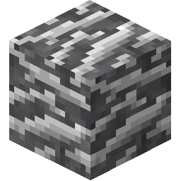Borax em xisto.
Lapis Lazuli
Lapis Lazuli é um decorativo Mineral que pode ser usado para fazer Dye. Pode ser encontrado em elevações abaixo de y = 100. Pode ser encontrado em Limestone e Mármore.
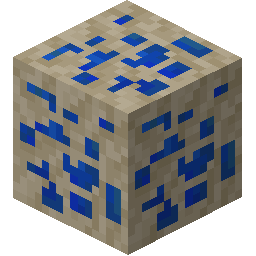Lapis Lazuli em calcário.
Gesso
Gesso é um decorativo Mineral que pode ser usado para fazer Alabaster. Aparece em formações densas como formações em elevações entre y=30 e y=90. Pode ser encontrado em Metamórfica pedras.
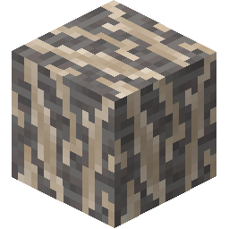Gesso em filito.
Halita
Halita é a Mineral que pode ser moído no Quern fazer Sal, que é um importante Conservante. Aparece em formações densas como formações em elevações entre y=30 e y=90. Pode ser encontrado em Sedimentar rpedras
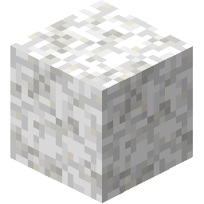Halita em giz.

Esmeralda
Emerald é um decorativo pedra preciosa. Parece muito bem, talvez se você pudesse encontrar alguém neste mundo incrivelmente solitário, você poderia trocá-lo com eles...
Aparece em formações verticais finas de minério, que podem ter até 60 quarteirões de altura. Pode ser encontrado em Intrusivo ígneo pedras.
Esmeralda em diorito.
Kimberlite
Kimberlite é decorativo e inestimável pedra preciosa. Aparece em finas formações de minério vertical chamadas Tubos de Kimberlite que pode ter até 60 quarteirões de altura. Só pode ser encontrado em Gabro.
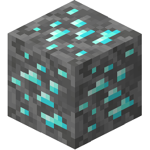Kimberlite em Gabbro.